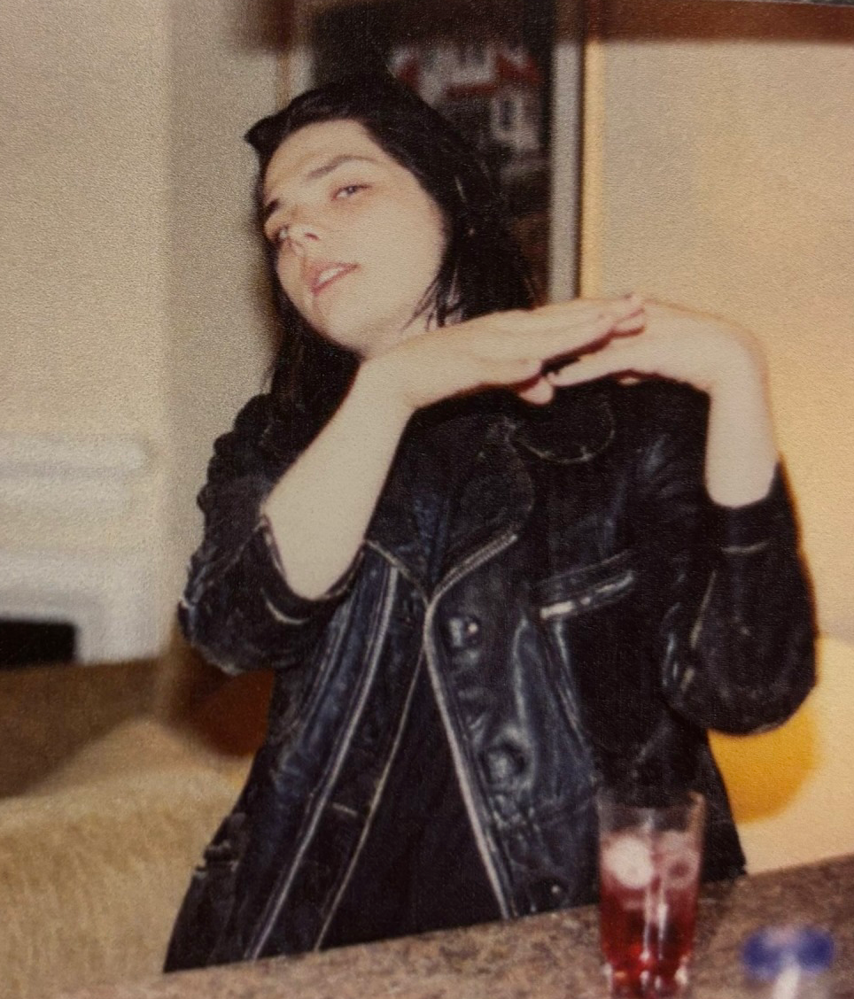
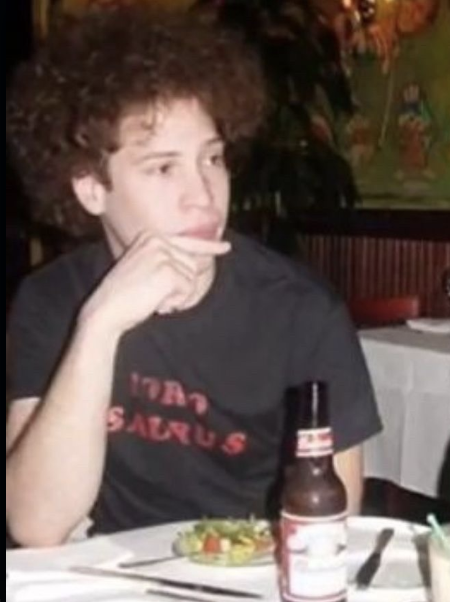
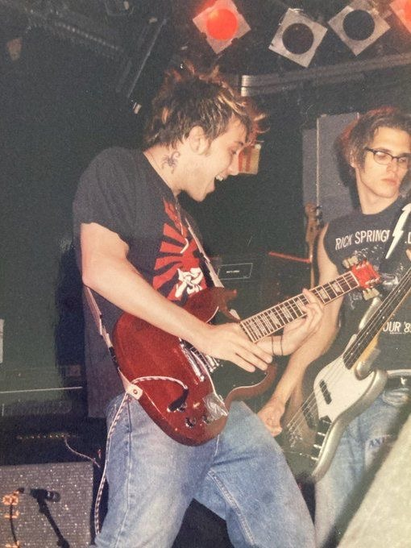
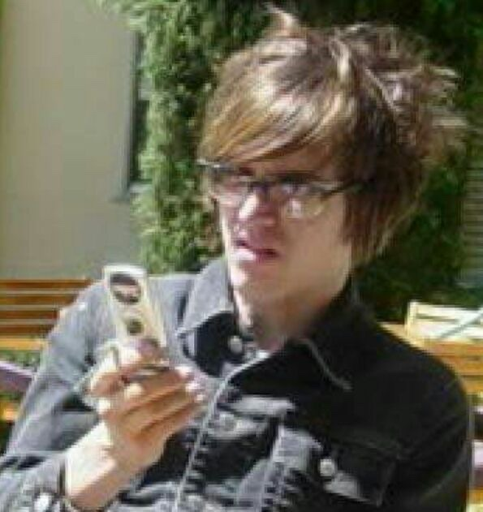
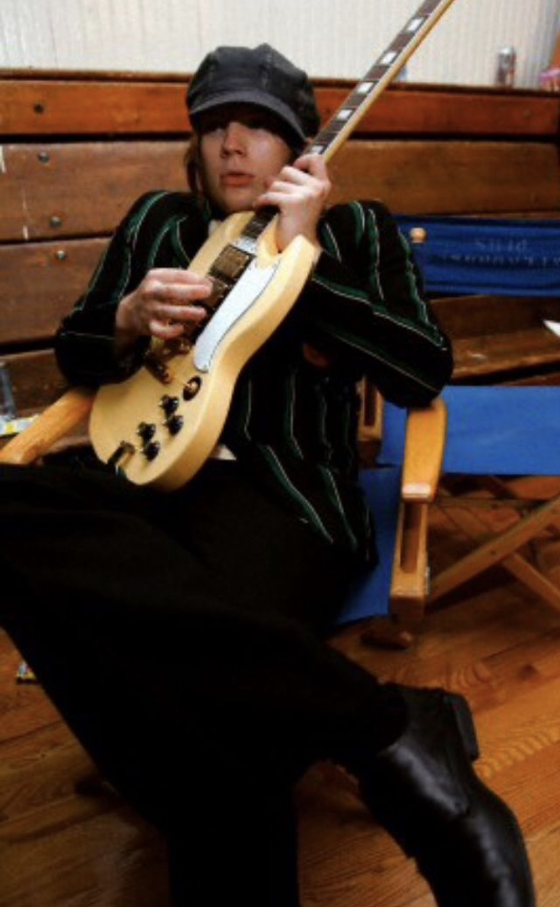
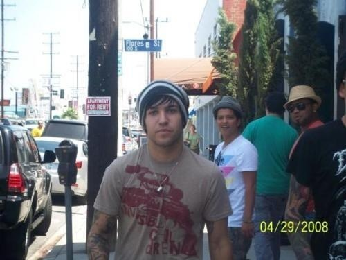
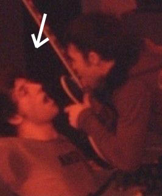
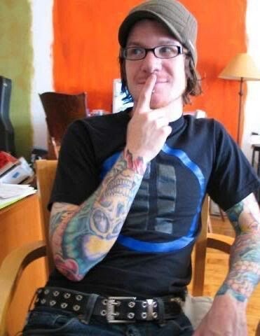
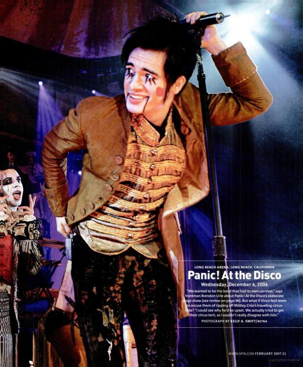

To properly understand 2000s online emo culture, I need to formally introduce you to the concept of the emo trinity.
Even as someone who has participated in this culture for a very long time, I’m not exactly sure when this particular phrasing came about. My best guess is early 2010s on bandom tumblr, but I’m also willing to give the earlier LiveJournal girls the benefit of the doubt because they could just as easily be responsible. Regardless, the “emo trinity” refers to the three biggest emo bands of the online, teen-girl-driven scene: My Chemical Romance, Fall Out Boy, and Panic! At The Disco. If you liked one of these bands, you probably liked all of them, or at least had a passing familiarity with the rest of the trinity due to regular cross-fandom contamination. These three bands were also connected beyond just their shared fanbase—MCR and FOB emerged early in the 2000s as the scene’s most influential mainstream bands and were openly friends with each other, and regularly toured together on punk-adjacent bills like Kevin Lyman's Warped Tour. Panic! At The Disco took off a few years later when Pete Wentz signed them to his brand new label Decaydance and took the young band under his wing, promoting them online, touring with them, and asking Brendon Urie to guest feature on Fall Out Boy songs.
Because one of these bands was often a person’s gateway into the scene, the regular cross-contamination of their fans meant that one of the other two trinity bands was probably the next band you would get into. I first heard Fall Out Boy on the radio, got way into them, and then branched out to My Chemical Romance because everyone I knew through FOB fandom also loved them. I never really got into Panic! because I was an edgy hater teenager who thought their music was too musical theater-esque. Which, I will admit, was kind of ridiculous condsidering how much I loved The Black Parade, a rock opera. But The Black Parade was like, goth musical theater stuff, so it was okay. In my head at least.
As the years have gone on, the “emo trinity” phrasing has mostly fallen out of use and into cringe territory, but the concept behind it remains—these three bands are still central to online emo fandom and are often among the first bands that young people get into. As the years went on, the lineup has changed a bit though. When MCR broke up 2013 and stopped producing new content for people to obsess over, breakthrough pop-rock band twenty one pilots filled the space they left empty and became the unofficial fourth pillar of the emo trinity (quartet?) When Panic! started to fall out of favor with the public, people tacitly replaced them with Paramore. (Paramore should have been included from the start anyway. But, misogyny.)
In this project, the trinity bands are the ones you will encounter the most. This is because they are the bands that dominate and shape online emo fan discourse.
Founded: 2001
Place of origin: Newark, New Jersey
Lineup
Gerard Way (vocals)

Ray Toro (lead guitar)

Frank Iero (rhythm guitar)

Mikey Way (bass)

Years active: 2001-2013, 2019-present
Albums: I Brought You My Bullets, You Brought Me Your Love (2002), Three Cheers for Sweet Revenge (2004), The Black Parade (2006), Danger Days: The True Lives of the Fabulous Killjoys (2010)
My song pick for you: I couldn’t pick one. Sorry. They’re my favorite band.
It's Not A Fashion Statement, It's a Fucking Deathwish (2004)
Mama (2006)
What you should know: I already wrote an entire section about MCR with everything you need to know about them, so in lieu of doing that again I’m just going to give you a fun fact. Before Frank Iero was the rhythm guitarist and onstage stuntman for My Chemical Romance, he was in a shitty high school punk band called Pencey Prep. Pencey held enough local sway to play at notorious New York punk club CBGBs in the early 2000s, and one of their headline shows here saw unknown garage-rock band The Strokes opening for them. Frank and his shitty friends thought the guys in The Strokes were such pretentious assholes that they secretly fucked with all of their sound equipment before their set so they would completely bomb. I like this story because (1) it’s insane that the The Strokes once opened for Frank Iero’s shitty high school punk band and (2) because Frank and his friends immediately clocked the guys in The Strokes as total assholes before anyone even knew who they were. Which I respect because those guys, as it turns out, are total assholes.

Founded: 2001
Place of origin: Chicago, Illinois
Lineup
Patrick Stump (vocals + rhythm guitar)

Pete Wentz (bass)

Joe Trohman (lead guitar)

Andy Hurley (drums)

Years active: 2001-2009, 2013-present
Albums: Take This To Your Grave (2003), From Under the Cork Tree (2005), Infinity on High (2007), Folie à Deux (2009), Save Rock and Roll (2013), American Beauty/American Psycho (2015), Mania (2018), So Much (for) Stardust (2023)
My song pick for you: GINASFS. the bridge soaarrrssss……..
What you should know: Fall Out Boy tends to change their sound pretty wildly from album to album, which often works against their credibility as a quote-unquote “rock” band. Notably, the band has drawn a lot of influence from Black genres like soul and R&B. This is in part due to Patrick’s intense lifelong passion for the genres, but also Pete’s influence. It took the general public a really long time to catch on to this, but Pete’s mother is of Afro-Jamaican descent and shaped a lot of the music that he listened to growing up. (His grandfather on his mother side was Arthur Winston Lewis, the U.S. Ambassador to Sierra Leone.) Pete’s biracial heritage was rarely ever commented on in the 2000s, and is still mentioned so rarely that many of his own fans don’t even know that he’s Black. The press usually only commented on his race if they were making fun of his natural hair, which they regularly claimed made him look like a "monkey."
Pete is also a complicated figure for a few reasons—the most glaring of which is obviously the relationship he had with a sixteen year old girl at the age of twenty five, who he allegedly wrote a lot of fucked up early FOB music about. I’m not here to lay out every gross thing that male emo idols have ever done (that would unfortunately take me another nine months), but I did want to mention this here to complicate Pete’s star text. He is problematic in many ways, and is also one of the few emo artists of color that we have from the 2000s. His experiences navigating a white-dominated rock scene resonate with so many emos of color who also criticize things that he’s done in his past. He was one of the few public figures in the 2000s who spoke openly about being bipolar and suicidal, and he presented himself as a (maybe) gay icon in a scene that still punished public displays of queerness. He is an idol to many, and also deeply flawed. I’m not here to ask anyone to forgive him or overlook his negative qualities. I definitely don’t. But he is also central to the development of emo as a queer/femme (and increasingly non-white) subculture, so I choose to include him in this story.
Founded: 2004
Place of origin: Las Vegas, Nevada
Lineup
Brendon Urie (vocals)

The rest: complicated
Years active: 2004-2023
Albums: A Fever You Can’t Sweat Out (2005), Pretty. Odd. (2008), Vices & Virtues (2011), Too Weird to Live, Too Rare to Die! (2013), Death of a Bachelor (2016), Pray for the Wicked (2018), Viva Las Vengeance (2022)
My song pick for you: The Ballad of Mona Lisa
What you should know: From what I’ve gathered as a relative outsider here, lots of Panic! fans only like their first two albums and specifically cite former guitarist Ryan Ross as the mastermind behind their early sound. Ross and bassist Jon Walker left the band after the release of their Beatles-esque album Pretty. Odd. (2008) due to arguments about the band’s direction. After their departure, lots of fans felt that the quality of the band’s music dropped off significantly, and post-split gossip led fans to believe that the departing members had been slighted by frontman Brendon Urie. Because of this, Ryan Ross in particular has become something of a folk hero to Panic! fans—especially since he basically left the public eye entirely after leaving the band. In my own experience, it’s relatively common to see fans distinguish themselves as specifically fans of Panic!’s music before Ross left the band ("#pre-split Panic!"). This trend has also sort of continued to a lesser degree as other members joined and left the band for various reasons over the years, which created even more gossip, which has ultimately created a narrative among fans that Brendon Urie probably really sucks to work with.